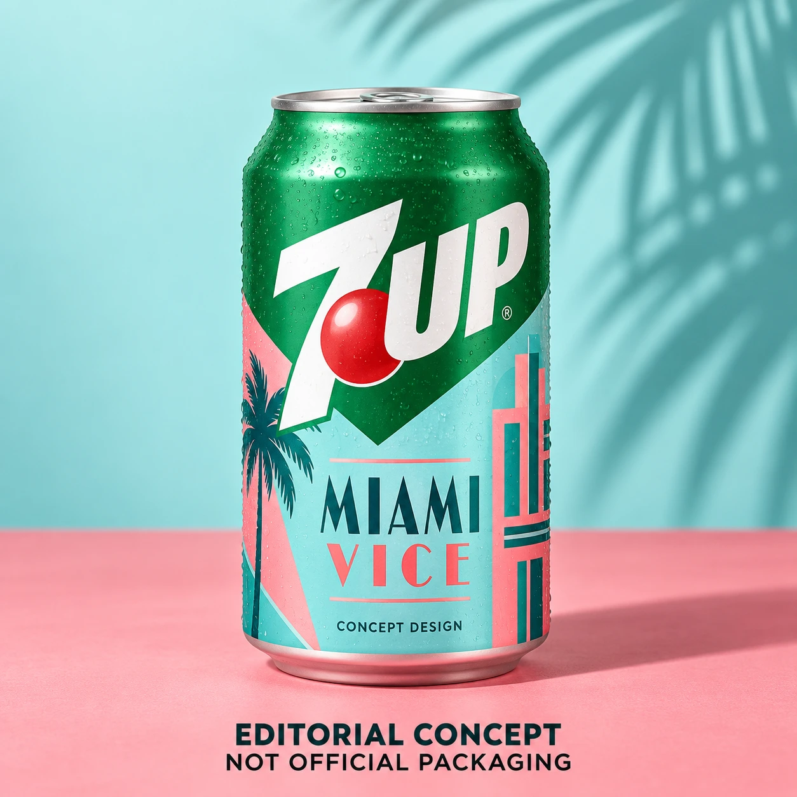
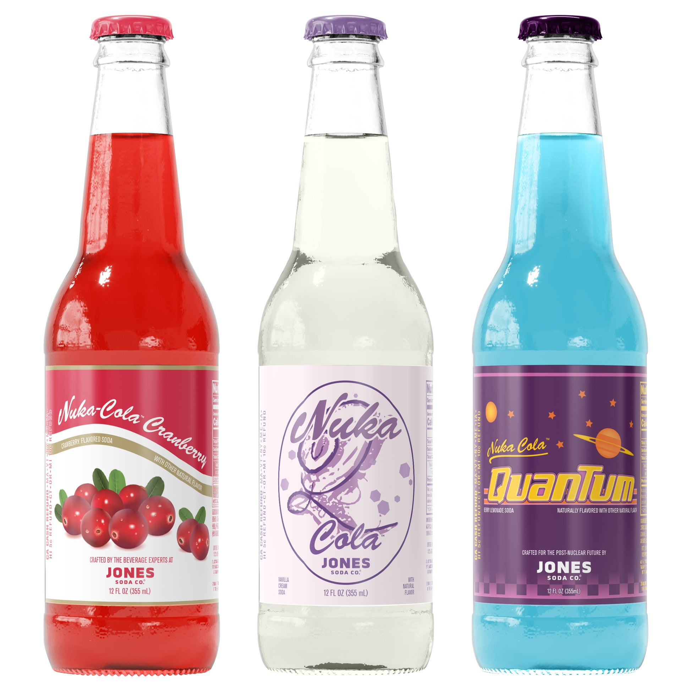
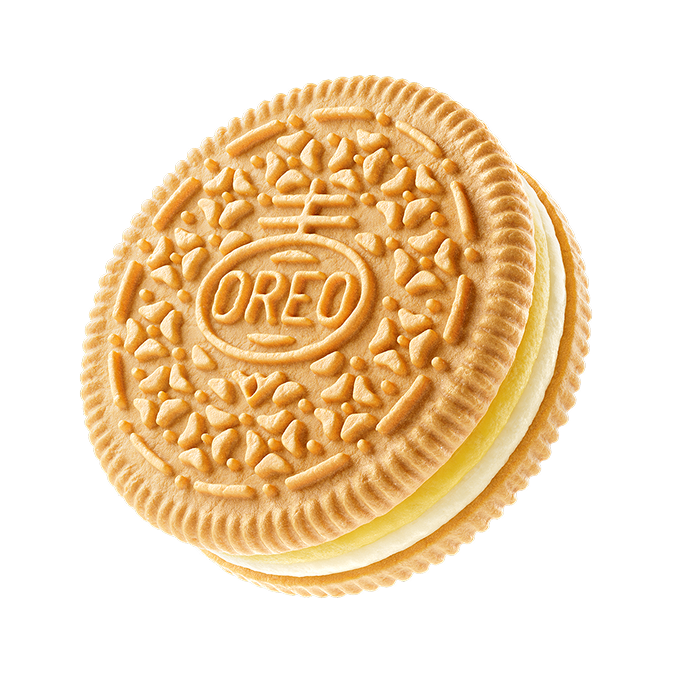
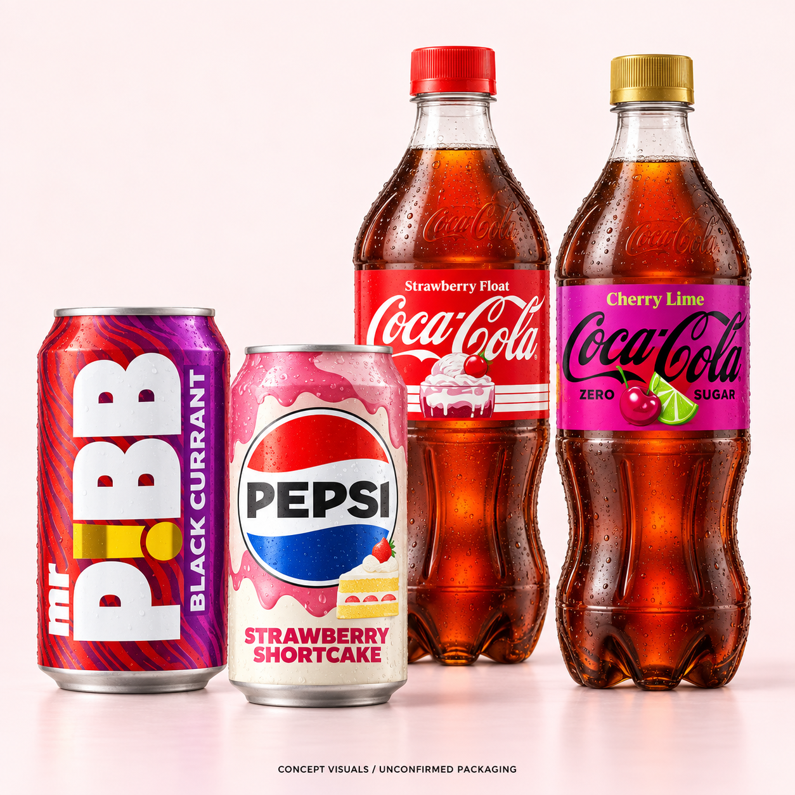
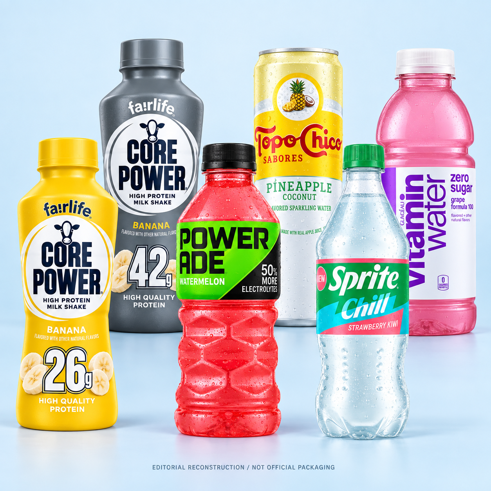
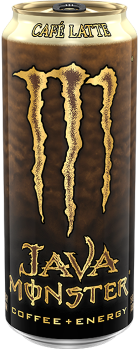

Is 7UP Miami Vice coming out?
The 7UP Miami Vice rumor, strawberry-pineapple-coconut speculation, and the release details we still cannot confirm. Concept illustration, not official packaging.
4 min read
What is new. What is gone. What is coming back.
Search is temporarily unavailable. You can still browse every article using the page links below.
1-6 of 25 articles

The 7UP Miami Vice rumor, strawberry-pineapple-coconut speculation, and the release details we still cannot confirm. Concept illustration, not official packaging.

Quartz and Cranberry join Quantum. Inside the new Fallout pack, where to check for it, and why its shipping date needs a caveat.

Banana Pudding, Deep Fried or Chicken & Waffles? The flavors, voting deadline and what OREO actually promises for 2027.

Coke Strawberry Float and Cherry Lime, Pepsi Strawberry Shortcake, and Mr. Pibb Black Currant: a flavor-by-flavor check of the launch rumors.

Core Power Banana, Powerade Watermelon, Sprite Strawberry Kiwi, Topo Chico Pineapple Coconut and vitaminwater Grape: new claims versus existing products.

A new discontinuation report names Cafe Latte. What is known, what Monster still lists, and why there is no confirmed last-can date.